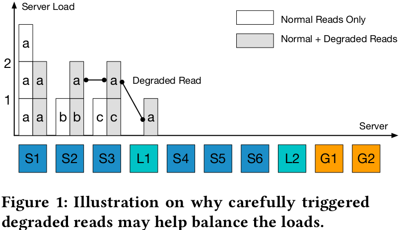
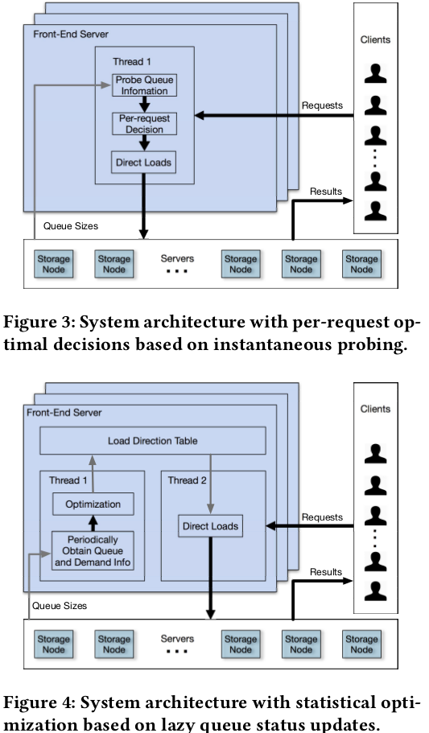

@SoCC'17 @Proactive Latency Reduction
Latency Reduction and Load Balancing in Coded Storage SystemsSummaryStrength (Contributions of the paper)Weakness (Limitations of the paper)Future Works
Motivation of this paper: the rigid load balancing schemes, i.e., passive recovery after timeout, is the major cause for long latency tails in erasure coded storage, especially in the presence of skewed demands.
Load Balance in Coded Storage: This paper intends to let system intentionally and intelligently perform degraded reads based on demand informatoin and load statistics in the system to direct requests away from hot servers. It would proactively launch a degraded read (, and ) to reconstruct the requested object in the first place, and both the request latency and the load of server can be reduced. 
A key question: whether to serve a request with a normal read or a degraded read and which servers to serve the degraded read.
a. Least Latency First: it only optimizes the latency of the current request in question regardless of future requests. It first probes queue status and optimizes for each request instantaneously.
b. Least Marginak Load First: it strikes a balance between reducing the current request latency and minimizing the overall system load. It first not only optimizes for each request with instantaneous probing, but also saves system resources for future requests by penalizing degraded reads.
Implementation and Evaluation: 
Each frontend server has a controller to execute load direction policies Computation of load direction table: MOSEK in python. Evaluation:
- (6, 2, 2) LRC: request latencies, task latencies, task waiting times, controller processing times
- (6, 3) RS: request latencies, task latencies, task waiting times, controller processing times